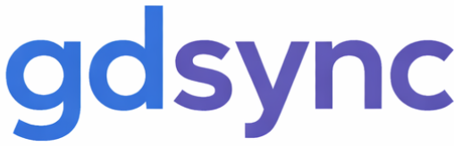

Last updated: April 14, 2026
This Privacy Policy describes how gdsync ("the Software," "we," "our") collects, uses, and handles your information when you use the gdsync command-line tool and its associated authentication proxy service. gdsync is an open-source CLI tool that synchronizes Google Docs with local files for editing. It connects to Google's APIs on your behalf to read and modify documents you have authorized access to.
By using gdsync, you acknowledge that you have read and understood this Privacy Policy.
When you authenticate with gdsync, the Software accesses the following through Google's APIs using the permissions (OAuth scopes) you grant:
gdsync requests only the minimum OAuth scopes necessary to perform its core functionality. The Software does not request or access data beyond the scopes listed above.
~/.gdsync/credentials.json.content.txt in your working directory.These files reside entirely on your local machine and are never transmitted to any server controlled by the gdsync maintainers.
During the initial authentication flow, the gdsync auth proxy (hosted as a Cloudflare Worker) temporarily facilitates OAuth token exchange. Specifically:
The auth proxy is involved only during initial sign-in. It has no ongoing access to your Google account, documents, or API calls.
gdsync requires each user to create and configure their own Google Cloud Platform project. As a result:
gdsync interacts with the following third-party services:
We encourage you to review the privacy policies of these services. gdsync's use and transfer of information received from Google APIs adheres to the Google API Services User Data Policy, including the Limited Use requirements.
gdsync does not maintain any persistent user data on its infrastructure. To fully revoke access and delete your data:
~/.gdsync/ directory;content.txt files or working directories created by gdsync.After completing these steps, no data associated with your use of gdsync will remain on your machine or on any server controlled by the gdsync maintainers.
gdsync uses OAuth 2.0 for authentication and does not handle or store your Google account password at any point. OAuth tokens are stored locally with your operating system's default file permissions. We recommend ensuring that your ~/.gdsync/ directory is accessible only to your user account.
The auth proxy communicates exclusively over HTTPS. Temporary token storage in Cloudflare KV is subject to Cloudflare's infrastructure security controls.
gdsync is a developer tool and is not directed at children under the age of 13 (or the applicable age of digital consent in your jurisdiction). We do not knowingly collect personal information from children.
gdsync is open source. You can review the complete source code at github.com/kylecooper7/gdsync to independently verify what data is accessed, how it is handled, and what network requests are made.
We may update this Privacy Policy from time to time. Material changes will be reflected by updating the "Last updated" date at the top of this page. Your continued use of gdsync after any modification constitutes acceptance of the revised Privacy Policy.
For questions about this Privacy Policy, open an issue at github.com/kylecooper7/gdsync/issues.